E kiadványunk az alapvető KRESZ ismereteket tartalmazza. A hangsúlyt azokra a szabályokra helyeztük, amelyek ismerete kerékpárosok számára különösen fontos, így akkor is érdemes átfutnod, ha már van jogosítványod. Ez a szöveg csak a fontosabb szabályokat tartalmazza, érdemes az átfogó KRESZ-tankönyvet is tanulmányozni.
A kerékpár a KRESZ értelmében jármű, tehát a vezetéséhez ugyanazok a feltételek szükségesek, mint más jármű esetében:
A KRESZ által javasolt kerékpártartozékok:
A KRESZ által előírt kötelező kerékpártartozékok:
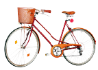
Nem igaz, a világítás kerékpáron is kötelező! Az első és hátsó világítás talán a legfontosabb kerékpártartozék. Világítás hiányában éjszaka teljesen láthatatlan vagy! Az első világítás ugyanolyan fontos, mint a hátsó, hogy a szembejövők is lássanak bennünket. Ne csak koromsötétben használj lámpát, hanem már szürkülettől és rossz látási viszonyok között is!
A KRESZ szerint bizonyos esetekben lehet minimális mennyiségű alkoholt fogyasztani, de mi nem javasoljuk. Ha mégis iszol, tekerj lassan, a megszokottnál is óvatosabban. Tévhit, hogy a rendőrök a kerékpárosokat nem szondáztatják. De ne csak a bírság elkerülése miatt, hanem leginkább saját és mások biztonsága érdekében közlekedj mindig járművezetésre alkalmas állapotban és körültekintően.
Nem igaz, a járdán általában tilos kerékpározni! Lakott területen csak ott szabad járdán kerékpározni, ahol az úttest kerékpáros közlekedésre alkalmatlan, és akkor is csak a gyalogos forgalom zavarása nélkül legfeljebb 10 km/h sebességgel. Fontos még tudni, hogy amennyiben egy úton tilos kerékpározni, az nem jelenti azt, hogy ott a járdán szabad kerékpározni – kivéve 12 éven aluliaknak főútvonal mellett.
Nem igaz, közúton általában nem szabad egymás mellett kerékpározni, csak önálló kerékpárúton ad erre lehetőséget a KRESZ.
A KRESZ viszont tiltja, hogy kerékpáron ülve állatot vezess. Lehet, hogy kényelmes, de balesetveszélyes, nemcsak számodra, hanem a többi közlekedő, sőt a kutyád számára is.
Bukósisak viselése csupán egyetlen esetben kötelező: ha lakott területen kívül 40 km/h feletti sebességgel haladsz. (A megengedett maximális sebesség ebben az esetben 50 km/h, de csak akkor, ha utast nem szállítasz. Részletesebben a sebességkorlátokról a 32. oldal utolsó pontjában olvashatsz.)
Nem igaz, a KRESZ ezt csak kiegészítő tábla esetén engedélyezi, lásd HOL SZABAD KERÉKPÁROZNI rész (23. oldal) Az engedélyezett esetekben is legyünk nagyon óvatosak, viszonylag új a szabály, sok gépjárművezető nem szokta még meg.
A kerékpárutakat, valamint a gyalog- és kerékpárutakat kötelező használni, kivéve ha az ezzel párhuzamos úttesten kerékpáros nyom is található. A gyalog- és kerékpárutakra vonatkozóan még egy kivétel szerepel a KRESZ-ben: ha a gyalog- és kerékpárúton a gyalogosok forgalma a kerékpárosok továbbhaladását akadályozná, a kerékpárosok az úttesten is közlekedhetnek. Sajnos vannak rosszul tervezett és épített kerékpárutak. Ezek használata sokszor veszélyes lehet, erről a „Hogyan közlekedj” rész KERÉKPÁRUTAK fejezetében olvashatsz (46. oldal)
Az úttesten
Az esetek többségében kerékpárral az úttesten kell és érdemes közlekedned, hacsak nem tilos.
Kerékpárúton
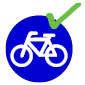Ha az út mellett van kerékpárút, akkor csak itt szabad kerékpározni. Kivétel: ha az úttesten kerékpáros nyom (piktogram) van felfestve, ugyanis ebben az esetben az úttesten is szabad kerékpározni. A megengedett sebesség kerékpárúton 30 km/h.
A kerékpárút kereszteződéseiben nem mindig a kerékpárosoknak van elsőbbsége! Ha elsőbbséged van, akkor is győződj meg előbb arról, hogy megadják azt, és csak utána hajts le az úttestre!
Kerékpársávban
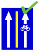Ha az úttesten van felfestett kerékpársáv, akkor csak itt szabad kerékpározni.
A kerékpársáv egyirányú közlekedésre szolgál. Nemcsak szabálytalan, hanem veszélyes és udvariatlan is szembe menni a forgalommal!
Nyitott kerékpársávban
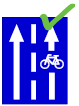A nyitott kerékpársávra ugyanazok a szabályok vonatkoznak, mint a kerékpársávra, két kivétellel:
1. A nyitott kerékpársávot el szabad hagyni biciklivel például balra kanyarodás előtt.
2. A nyitott kerékpársávra más járművek is ráhajthatnak például jobbra kanyarodás előtt.
Kerékpárosok által is használható autóbusz forgalmi sávban
Csak abban a buszsávban szabad kerékpározni, ahol ezt tábla engedélyezi, ilyen esetekben általában kerékpáros piktogramokat is festenek az útra. Amennyiben engedélyezett kerékpárosok számára a buszsáv használata, akkor ebben a forgalmi sávban kell kerékpárral haladni. Fontos, hogy ne akadályozzuk szükségtelenül a buszok haladását, próbáljunk segítőkészek lenni, ha előzni próbálnak minket. Buszmegállóból indulni készülő buszt ne előzzünk, engedjük magunk előtt haladni, így nem kell a busznak újra megelőznie minket. Amennyiben nem szerepel a táblán kerékpáros kiegészítő jelzés, akkor tilos a buszsávban kerékpározni! (Lásd még később a tiltásoknál.)
Gyalog- és kerékpárúton
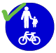A gyalogosok (különösen a gyerekek és kutyák) kiszámíthatatlan mozgására, hirtelen előbukkanására mindig számítanunk kell, ezért a megengedett legnagyobb sebesség 20 km/h!
A gyalog-kerékpárút használata általában kötelező, azonban ha a gyalog- és kerékpárúton a gyalogosok forgalma a kerékpárosok továbbhaladását akadályozná, vagy az úttesten van felfestett kerékpáros nyom (piktogram), a kerékpárosok az úttesten is közlekedhetnek.
Gyalogos-kerékpáros zónában
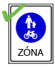Gyalogos-kerékpáros zónában a kerékpárosok számára kijelölt részen a megengedett sebesség 20 km/h, a zóna többi részén 10 km/h. Egyébként ugyanazok a szabályok érvényesek rá, mint amelyek a gyalog-kerékpárútra.
Kerékpáros nyomon
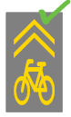Az úttestre festett kerékpáros piktomgramokból kialakított burkolati jelek sora (az ábrán látható kerékpáros piktogram) a kerékpárosok számára jelzi az úttesten javasolt pozíciót, egyúttal a többi járművezetőt figyelmezteti a kerékpárosok jelenlétére. Amennyiben ilyen nyom van felfestve az úttestre, akkor a párhuzamos kerékpárút, illetve gyalog-kerékpárút használata nem kötelező.
Természetesen az úttesten elfoglalt pozíció csak javaslat, tehát el lehet térni tőle, valamint más járművek is ráhajthatnak, mivel nem jelent külön sávot.
Leállósávon vagy kerékpározásra alkalmas útpadkán
Ez elég értelmetlen kitétel a KRESZ-ben. Magyarországon csak autópályán van leállósáv, ahol tilos kerékpározni, az útpadka pedig szinte sehol sem alkalmas biciklizésre.
Kétirányú kerékpáros közlekedés számára megnyitott egyirányú utca
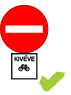Egyirányú utcába a forgalommal ellenkező irányból abban az esetben szabad behajtani, ha azt kiegészítő tábla engedi. Ez esetben szigorúan az úttest jobb oldalán kell haladni, ha van felfestett kerékpársáv, akkor ott.
Járdán
Járdán tilos kerékpározni!
Két kivétel van. Az első: Mivel a 12 évnél fiatalabb gyerekek főútvonalon még nem kerékpározhatnak, ezért ők haladhatnak a párhuzamos járdán legfeljebb 10 km/h sebességgel. A másik kivétel: lakott területen levő olyan úton, ahol az úttest kerékpáros közlekedésre alkalmatlan, közlekedhetsz a járdán. De csak a gyalogos forgalom zavarása nélkül és legfeljebb 10 km/óra sebességgel.
Gyalogúton
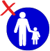Amennyiben egyéb tábla ezt nem engedélyezi, akkor gyalogúton tilos kerékpározni.
Gyalogos zónában
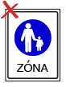Amennyiben egyéb tábla ezt nem engedélyezi, a gyalogos zónában tilos kerékpározni. Ha a kiegészítő tábla csak bizonyos időszakokban tiltja a behajtást, akkor a többi időszakban legfeljebb 10 km/h sebességgel szabad kerékpározni. A kerékpárt tolni természetesen mindig szabad.
Tilos kerékpározni autópályán és autóúton
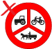Kerékpárral behajtani tilos
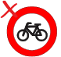Az ilyen táblával jelölt szakaszokra értelemszerűen nem szabad kerékpárral behajtani. A kerékpárt tolva már gyalogosnak minősülünk, tehát az ilyen táblával jelzett helyen szabad tolni a kerékpárt.
Mindkét irányból behajtani tilos
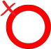 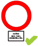Ennél a táblánál ugyancsak tilos kerékpárral behajtani, kivéve, ha valamilyen kivételt jelző tábla szerepel a fenti tábla alatt.
Ahol a buszoknak vagy taxiknak engedélyezett a behajtás, oda kerékpárral is be szabad hajtani. Értelemszerűen, ha a tábla alatt a „kivétel kerékpárral” kiegészítő tábla szerepel, szintén be lehet hajtani kerékpárral.
Behajtani tilos
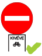 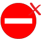Egyirányú utcába értelemszerűen tilos a forgalommal ellenkező irányból behajtani kerékpárral is, kivéve, ha az alábbi, kerékpárt jelző kiegészítő tábla ezt megengedi. Ez utóbbi esetben szigorúan az úttest jobb oldalán kell haladni kerékpárral, ha van felfestett kerékpársáv, akkor ott.
A 2010-es KRESZ-módosítás csak minimális változást hozott az egyirányú utcákra vonatkozóan. A téves sajtóhírekkel ellentétben továbbra is csak akkor szabad ellenirányba behajtani, ha a kiegészítő tábla ezt megengedi! Nagyon fontos, hogy ha nincs kiegészítő tábla, ne hajtsunk be az egyirányú utcába forgalommal szemben! A keresztező utcákban közlekedők ugyanis nem számítanak az ellenkező oldalról érkező kerékpárosokra!
Buszsávban
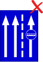Amennyiben ezt külön nem engedélyezik, a buszsávban tilos kerékpározni! Ahol a jobb szélső sáv a buszsáv, ott az ettől balra eső első forgalmi sávban kell haladni. Tehát jobbról is és balról is járművek haladhatnak el mellettünk, ami nagymértékben csökkentheti a biztonságérzetünket, és valóban nem egy ideális helyzet - érdemes ilyenkor kerékpárral más útvonalat választani. Ha mégis ilyen helyzetbe kerülünk, akkor a tőlünk jobbra eső buszsávban autóbuszok, taxik, segédmotoros kerékpárok, motor-kerékpárok, és a jobbra kanyarodáshoz felkészülő egyéb járművek elhaladására kell számítani.
Az elsőbbségi szabályok határozzák meg, hogy a kereszteződésbe ki hajthat be, és kinek kell lassítania illetve megállnia (azaz elsőbbséget adnia). Ezek a szabályok a kerékpárosokra is vonatkoznak, ismeretük nagyon fontos. A kereszteződésen való áthaladást az alábbiak szabályozzák, rangsorban:
1. Gyalogosok elsőbbsége a kanyarodó járművekkel szemben, illetve a zebrán
A számozás rangsort is jelent, tehát a rendőr felülbírálhatja a lámpa jelzését, de a zebrán haladó gyalogosoknak még akkor is meg kell adni az elsőbbséget, ha a rendőr egyébként szabad utat adott.
1. Gyalogosok elsőbbsége
A zebrán áthaladó gyalogosoknak (ha már a zebrán haladnak) elsőbbségük van minden járművel szemben. A gyalogosokat még csak zavarni sem szabad az átkelésük során. Ha többsávos úton az egyik sávban valaki már megállt a zebra előtt, akkor a többi sávban is meg kell állni! A zebrára lépés előtt természetesen a gyalogosnak meg kell győződnie arról, hogy biztonságosan átkelhet az úttesten. Ha kerékpárral zebrát keresztezel, akkor ugyanúgy meg kell adnod a gyalogosoknak az elsőbbséget, mint mikor autót vezetsz!
Megjegyzés: zebrán az elsőbbség csak a gyalogosokra vonatkozik. Tehát biciklisekre csak akkor, ha a zebránál leszállnak és tolják a biciklit. Ha kerékpárral az egyik járdáról a másikra kelsz át a zebrán, akkor ezt csak megfelelő körültekintéssel, és lassan tedd. Az autósok ugyanis csak gyalogosokra számítanak ott, száguldozó biciklisekre nem!
2. Rendőr
Ha a kereszteződésben rendőr irányítja a forgalmat, akkor az ő jelzéseit kell követni. Itt most nem részletezzük, melyik mozdulat mit jelent. Ilyen esetekben légy különösen körültekintő, ha túl bonyolult, szállj le a bringáról, és onnantól már gyalogosnak minősülsz.
3. Forgalmi jelzőlámpa
A lámpák jelzései elég egyértelműek, azonban mégis kiemelnénk az alábbiakat:
Előfordul, hogy a főlámpa piros kört jelez, de a kiegészítő lámpa zöld nyilat mutat. Ebben az esetben a nyíl irányába szabad tovább haladni.
4. Elsőbbséget szabályozó táblák
Ha a kereszteződésben nincs lámpa, vagy nem működik (sárgán villog), akkor az elsőbbséget szabályozó táblák döntik el, hogy kinek van elsőbbsége.
Elsőbbségadás kötelező tábla
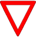A táblánál le kell lassítanod, és elsőbbséget kell adnod a keresztező forgalomnak, tehát mind a jobbról, mind a balról jövőknek. Ha a kerékpárúton van ilyen tábla, akkor természetesen szintén meg kell adnunk az elsőbbséget a keresztező forgalomnak.
Stoptábla - Állj, elsőbbségadás kötelező!
A táblánál meg kell állnod, és elsőbbséget kell adnod a keresztező forgalomnak, a jobbról és a balról jövőknek egyaránt. Ha a kereszteződésben van jelzőlámpa, és zöldet mutat, természetesen nem kell megállnod.
Ha egy sűrűn keresztezett utcán hajtasz végig, és nincs előtted elsőbbséget szabályozó tábla, érdemes ellenőrizned a mellékutcákat, hogy van-e ott elsőbbségadást szabályozó tábla - ezeket hátulról is könnyen felismerheted, ezért adtak nekik sajátos formát, nyolcszög, ill. csúcsán álló háromszög. Ha nem látsz ilyet, egyenrangú közlekedésről van szó, ahol a jobbkéz-szabály érvényes.
5. Jobbkéz-szabály
Ha nincs lámpa a kereszteződésben, és táblát sem látsz, akkor ún. egyenrangú útkereszteződésben vagy. Itt a jobbkéz-szabály a mérvadó. Eszerint a tőled jobbról érkezőnek elsőbbsége van veled szemben, neked pedig elsőbbséged van a balról jövővel szemben. Amennyiben neked van elsőbbséged, mindig győződj meg arról, hogy azt valóban meg is adják neked - próbálj ilyenkor szemkontaktust teremteni a többi közlekedővel. A jobbkéz-szabály speciális eseteit itt nem részletezzük, ha kérdésed van ezzel kapcsolatban, olvasd el a Horváth Péter által szerkesztett Kerékpáros KRESZ című írást, vagy lapozz fel egy KRESZ tankönyvet!
Egyenrangú útkereszteződés kerékpárúton
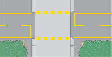Az ábrán látható szaggatott sárga felfestés az úttestet keresztező kerékpárutat jelöli. Ez azonban önmagában nem jelenti azt, hogy itt a kerékpárosnak elsőbbsége lenne! Ha sem a kerékpárúton, sem a keresztező úton nincs kitéve az elsőbbségadás-tábla, akkor ez egyenrangú útkereszteződés. Ilyen kereszteződésekben a legnagyobb óvatossággal hajts át, megadva az elsőbbséget a jobbról jövőknek, szükség esetén a balról jövőnek is.
Ha a kerékpáros KRESZ minden apró részletére kíváncsi vagy, de nincs kedved egy teljes tankönyvön átrágni magad, olvasd el a Horváth Péter által szerkesztett „KERÉKPÁROS KRESZ” füzetet is! Ezt honlapunkon is megtalálhatjátok.